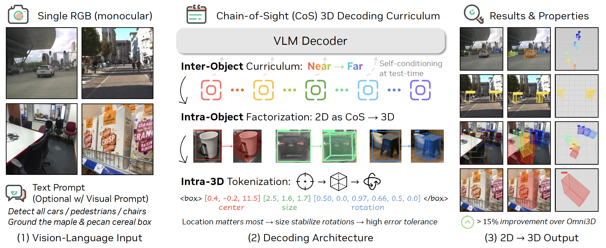
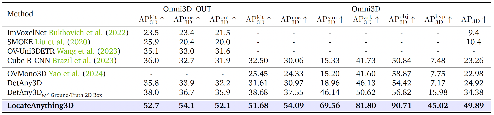
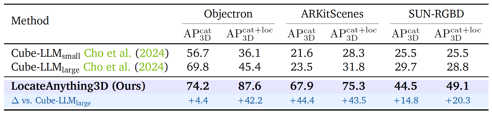
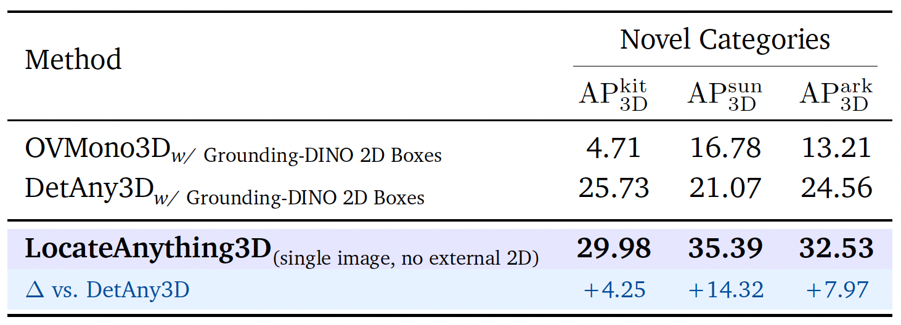
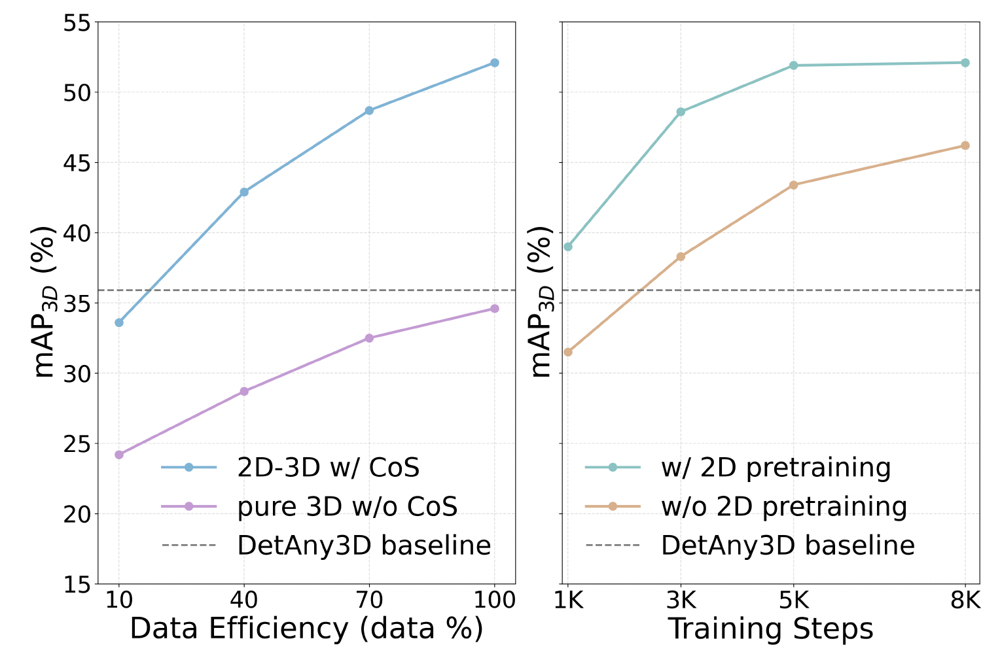
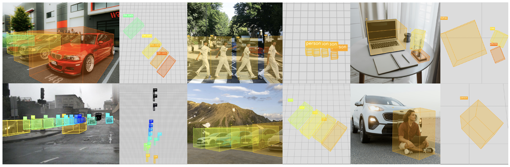

Abstract
Turning 3D Detection into a Disciplined Next-Token Problem
To act in the world, a model must name what it sees and know where it is in 3D. LocateAnything3D is a VLM-native recipe that casts 3D detection as next-token prediction via an explicit Chain-of-Sight (CoS) sequence mirroring how humans reason from images: localize an object in 2D, then infer its distance, size, and pose. The decoder first emits 2D detections as a visual chain-of-thought before predicting calibrated 3D boxes under an easy-to-hard curriculum. Across objects, a near-to-far ordering reduces early ambiguity and matches ego-centric utility; within each object, a center-from-camera, dimensions, and rotation factorization ranks information by stability and learnability. This interface preserves open-vocabulary grounding and visual prompting without bespoke heads.
On the challenging Omni3D benchmark we achieve 49.89 AP3D, surpassing the previous best by +15.51 absolute even when the baseline has access to ground-truth 2D boxes. LocateAnything3D also generalizes zero-shot to held-out categories with strong robustness by turning 3D detection into a disciplined next-token problem.
Method
LocateAnything3D Chain-of-Sight Decoding
LocateAnything3D is post-trained from the Eagle 2.5 base model. In the Chain-of-Sight decoding, monocular 3D perception is formatted as a compact sequence that interleaves 2D and 3D information per instance, optimized end-to-end as next-token prediction.
Chain-of-Sight Factorization
- Input: Monocular RGB image plus free-form text query (e.g., “detect all cars,” “any chair,” “all pedestrians on the crosswalk”) optionally augmented with a visual prompt (box or click).
- CoS sequence: For each instance, the decoder emits a 2D bounding box, then the 3D box (center, size, rotation), and repeats until EOS.
- Output: Calibrated multi-object 3D boxes in the camera frame with open-vocabulary labels and depth-colored cuboids.
Curricula & Packaging
- Inter-object curriculum: Serialize instances in depth order, near → far, so confident objects appear early and stabilize decoding.
- Intra-object factorization: Within each object, produce center-from-camera → dimensions → rotation to rank information by stability.
- CoS packaging: Canonical multi-box normalization, large-scale text auto-annotation, anti-hallucination negatives, and other CoS-ready supervision tools.

Architecture overview with Chain-of-Sight 3D decoding curriculum.Highlights
Chain-of-Sight 3D Reasoning in a VLM
Chain-of-Sight 3D Reasoning
Casts 3D detection as a short, structured token sequence that mirrors human inference: first localize in 2D, then infer distance, size, and pose.
Joint 2D–3D Interface
Uses 2D bounding boxes as a visual chain-of-thought, tightly coupling 2D grounding and 3D estimation within a single autoregressive VLM decoder that supports text and visual prompts.
3D-Aware Curriculum
Orders detections from near to far and factorizes each 3D box into center → size → rotation, aligning supervision with what is easiest and most informative to predict.
Cross-Domain Robustness
Trained on a CoS-ready corpus (~1.74M examples) spanning indoor/outdoor scenes, driving, ARKit, synthetic environments, and more for strong zero-shot generalization.
LocateAnything3D Data
CoS-Ready Supervision Across Domains
We curate a camera-centric dataset that presents supervision in exactly the form the model decodes, making Chain-of-Sight learning practical.
Unify Benchmarks
ARKitScenes, SUN-RGBD, Hypersim, Objectron, KITTI, nuScenes, CA-1M, and more are harmonized into a shared schema.
Canonical Multi-Box Normalization
Ensures every cuboid is calibrated in the same camera frame for stable supervision.
Large-Scale Text Auto-Annotation
Maintains open-vocabulary prompting by auto-generating category and spatial prompts.
Anti-Hallucination Negatives
Pair negative prompts with CoS tuples to teach the model when to abstain.
Results
State-of-the-Art 3D Detection & Grounding
LocateAnything3D delivers substantial gains over prior monocular 3D detectors and VLM-based systems while preserving open-vocabulary grounding.

Omni3D Detection. 49.89 AP3D, +15.51 points over DetAny3D even when the baseline has ground-truth 2D boxes.
Indoor 3D Grounding. Beats Cube-LLMlarge across Objectron, ARKitScenes, and SUN-RGBD using 10× less data.
Novel Category Evaluation. No external 2D detector required; best zero-shot AP3D across KITTI, SUN, and OmniPark splits.Data Efficiency
2D→3D Chain-of-Sight Accelerates Learning
The Chain-of-Sight formulation (blue) consistently outperforms a direct 3D baseline (purple) and reaches DetAny3D-level performance with only 10% of the training data. 2D pretraining (green) accelerates convergence relative to training from scratch (orange).

Data efficiency and training dynamics analysis.Qualitative
Zero-Shot Chain-of-Sight Inference
Depth-colored cuboids stay consistent across in-the-wild scenes, indoor environments, and AR applications.

Zero-shot qualitative visualizations with depth-aware cuboids.Citation
LocateAnything3D
Please cite LocateAnything3D if you find our Chain-of-Sight interface useful.
@article{man2025locateanything3d,
title = {LocateAnything3D: Vision-Language 3D Detection with Chain-of-Sight},
author = {Yunze Man and Shihao Wang and Guowen Zhang and Johan Bjorck and Zhiqi Li and Liang-Yan Gui and Jim Fan and Jan Kautz and Yu-Xiong Wang and Zhiding Yu},
journal = {arXiv preprint arXiv:2511.20648},
year = {2025},
}